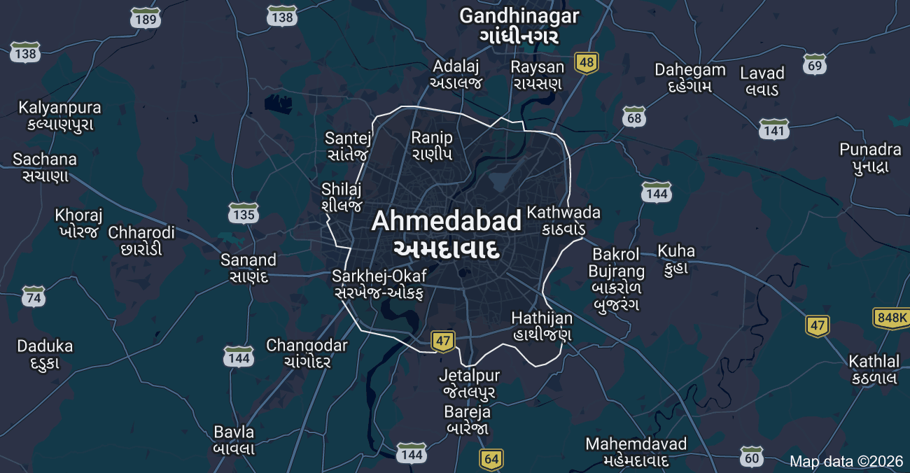

Average AQI
monitoring
90
Moderate
Worst Day AQI
warning
182
Unhealthy
Best Day AQI
eco
18
Good
Total Days Tracked
history
1298
Observations
AQI Trend Over 3.5 Years
Daily aggregated data points from 2022 to 2026
Y: AQI
Value (0-200)
Standard Dev.
±14.2
Confidence
98.4%
Data Gaps
0.02%
lightbulb
Critical Insight
Ahmedabad had the worst air quality in December–January and cleanest during Monsoon (July–September).
ac_unit
Peak Pollution
Winter Inversion
umbrella
Washout Period
Monsoon Rainfall

location_on
Network Region
Ahmedabad, IN
Primary Pollutant
LEVEL HIGHPM 2.5
Fine Particulate Matter
CO
NO2 Nitrogen Dioxide
42 µg/m³
O3 Ozone Layer
18 µg/m³
cloud
Current Stability
Stable